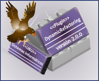

Acerca del Plugin de Refactorización Dinámica Para Eclipse Este plugin fue desarrollado por Laura Fuente De La Fuente en la Universidad de Burgos.
Este programa es software libre: puede redistribuirlo y/o modificarlo bajo los términos de la licencia GNU General Public License como fue publicada por la Free Software Foundation, bien en su versión 3 o cualquier versión posterior. Este programa se distribuye con el objetivo de ser de utilidad, pero SIN NINGUNA GARANTÍA; ni siquiera la garantía implícita de ser comercializable o apropiado para algún propósito particular. Vea la licencia GNU General Public License para más detalles. Debería haber recibido una copia de la licencia con el programa. Si no, puede acudir a Licencias GNU. Contacto: Laura Fuente De La Fuente Copyright (C) 2009 Laura Fuente De La Fuente. |